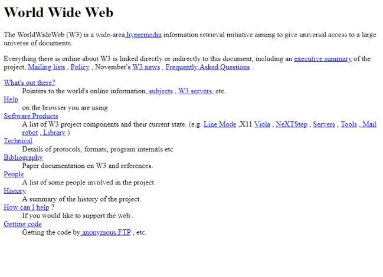
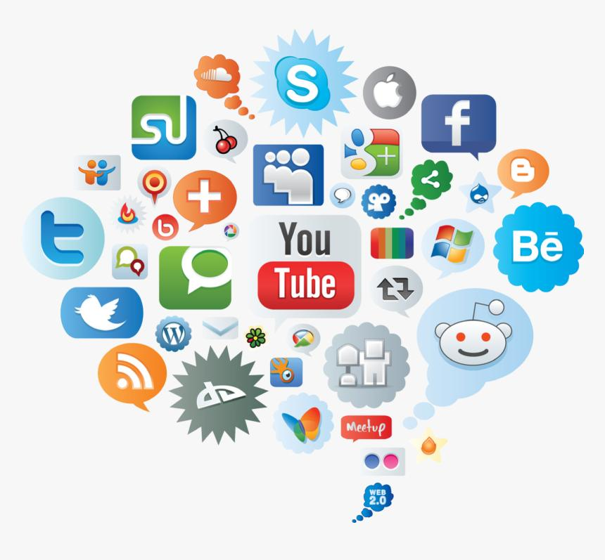
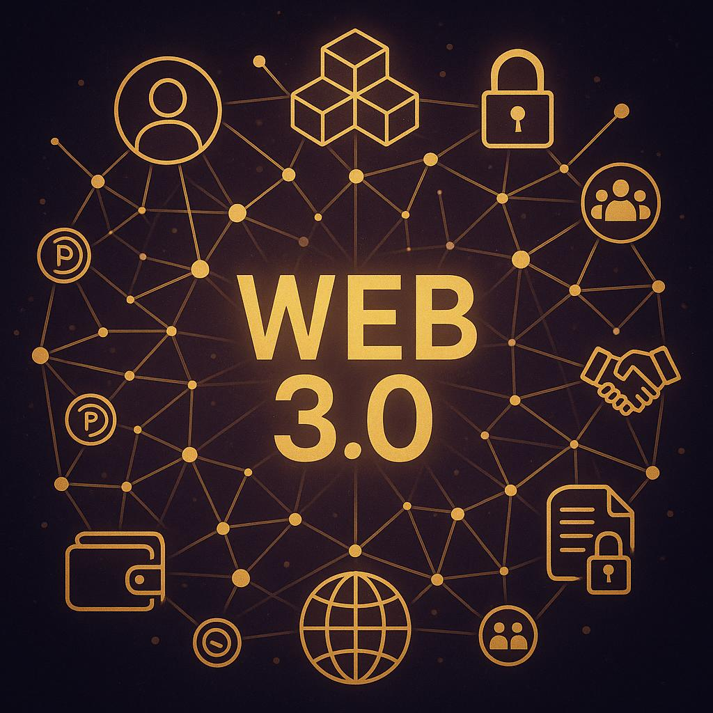

La evolución de las tecnologías web ha sido un proceso de transformación constante que ha cambiado la manera en que las personas acceden a la información, se comunican y utilizan Internet. Desde sus inicios, la web ha pasado de ser un espacio principalmente informativo, con páginas estáticas y poca interacción, a convertirse en un entorno dinámico donde los usuarios pueden compartir contenido, participar en comunidades digitales y utilizar herramientas avanzadas. Esta evolución ha permitido el desarrollo de nuevas plataformas, servicios y tecnologías que actualmente forman parte de la vida cotidiana y del funcionamiento de las empresas.
Generaciones de las tecnologías web
Web 1.0
La Web 1.0 representa la primera generación de la World Wide Web, que comenzó a desarrollarse durante la década de 1990. Se caracterizaba por ofrecer páginas web estáticas, cuyo contenido estaba compuesto principalmente por textos, imágenes y enlaces. Los usuarios podían navegar por diferentes sitios y consultar información, pero tenían pocas posibilidades de interactuar con el contenido o modificarlo. En esta etapa, las páginas eran creadas y actualizadas principalmente por sus desarrolladores.
Durante esta generación, Internet se utilizaba principalmente como un medio para publicar y consultar información. Los usuarios actuaban como lectores, ya que podían visitar páginas web y acceder a sus contenidos, pero no existían las herramientas interactivas que conocemos actualmente, como las redes sociales, los comentarios o las plataformas colaborativas.

Características principales
- Páginas estáticas: la información permanecía igual hasta que el creador la actualizaba.
- Poca interacción: los usuarios principalmente consultaban información.
- Contenido informativo: predominaban los textos, imágenes y enlaces.
- Actualización manual: los desarrolladores modificaban directamente las páginas.
- Navegación sencilla: los usuarios accedían a diferentes documentos mediante enlaces.
Web 2.0
La Web 2.0 representa la segunda generación de la World Wide Web, caracterizada por permitir una mayor interacción y participación de los usuarios. A diferencia de la Web 1.0, donde las personas principalmente consultaban información, esta nueva etapa permitió crear, compartir y modificar contenidos en Internet. Su desarrollo impulsó la aparición de redes sociales, blogs, wikis y diferentes plataformas digitales que facilitaron la comunicación y el intercambio de conocimientos.
Durante esta generación, Internet dejó de ser únicamente un espacio para consultar información y se convirtió en un entorno participativo y colaborativo. Los usuarios podían publicar fotografías, compartir videos, escribir comentarios, crear contenidos y comunicarse con otras personas en diferentes partes del mundo. Esto permitió el crecimiento de comunidades virtuales y nuevas formas de interacción social y profesional.

Características principales
- Mayor interacción: los usuarios pueden participar, comentar y compartir información.
- Redes sociales: surgieron plataformas que facilitan la comunicación y conexión entre personas.
- Contenido colaborativo: los usuarios pueden crear y modificar contenidos en conjunto.
- Participación activa: las personas dejan de ser únicamente consumidores de información y también se convierten en creadores.
- Compartir contenido: permite publicar fotografías, videos, opiniones y diferentes recursos digitales.
Web 3.0
La Web 3.0 representa una nueva etapa en la evolución de la World Wide Web, caracterizada por el desarrollo de tecnologías más inteligentes, personalizadas y descentralizadas. Busca mejorar la manera en que las personas interactúan con Internet mediante herramientas como la inteligencia artificial, el aprendizaje automático y la tecnología blockchain. Su objetivo es ofrecer experiencias más avanzadas, facilitar el acceso a la información y brindar mayor control a los usuarios sobre sus datos digitales.
La Web 3.0 utiliza tecnologías avanzadas para comprender mejor la información y ofrecer servicios adaptados a las necesidades de cada usuario. Por medio de la inteligencia artificial, las plataformas pueden analizar datos y proporcionar recomendaciones personalizadas. Además, la tecnología blockchain permite desarrollar sistemas descentralizados en los que la información y las transacciones pueden gestionarse sin depender necesariamente de una autoridad central. Estas herramientas están impulsando nuevas posibilidades en la educación, los negocios y la comunicación digital.

Características principales
- Inteligencia artificial: permite analizar información y ofrecer respuestas y recomendaciones más precisas.
- Descentralización:busca reducir la dependencia de servidores y entidades centrales mediante tecnologías como blockchain.
- Personalización: ofrece experiencias y contenidos adaptados a las necesidades de los usuarios.
- Mayor control de los datos: busca proporcionar a los usuarios más control sobre su información digital.
- Nuevas tecnologías: incorpora herramientas como blockchain, contratos inteligentes y aprendizaje automático.
Comparación de las generaciones web
| Aspecto |
Web1.0 |
Web2.0 |
Web3.0 |
| Característica |
Estática |
Interactiva |
Inteligente y descentralizada |
| Usuario con mayor control en sus datos |
Lector |
Participante |
Mayor control |
| Contenido |
Publicado por desarrolladores |
Creado por usuarios |
Personalizado |
| Tecnologías |
HTML básico |
Blogs y redes sociales |
IA y blockchain |